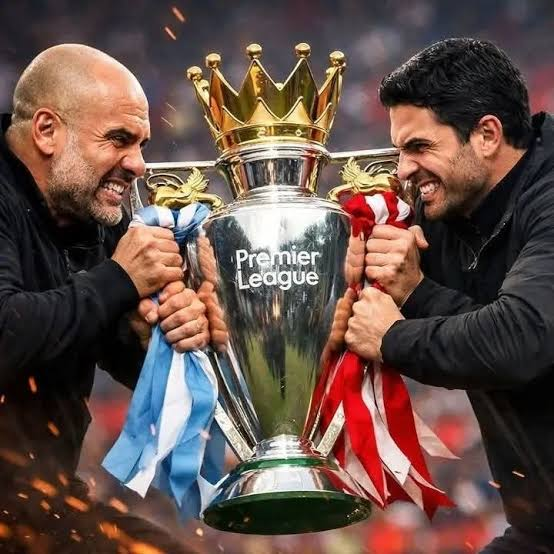

The Premier League title race continues to intensify as multiple clubs remain within striking distance of the top position. Unlike previous seasons dominated by one or two teams, this campaign demonstrates increased tactical competition and squad depth across the league.
Title-winning teams traditionally rely on consistency rather than short bursts of form. Defensive organization, injury management, and rotation strategy often determine success over a 38-game season.
High pressing systems require significant physical output. Teams competing in European competitions must carefully manage fatigue to avoid late-season drop-offs.
Squad depth often separates contenders from challengers. Minor injuries during congested fixture periods can disrupt tactical cohesion and impact momentum.
Based on current performance metrics and squad stability, the title race is likely to remain competitive until the final stages of the season.
Conclusion: Tactical discipline and injury control will ultimately determine the champion.